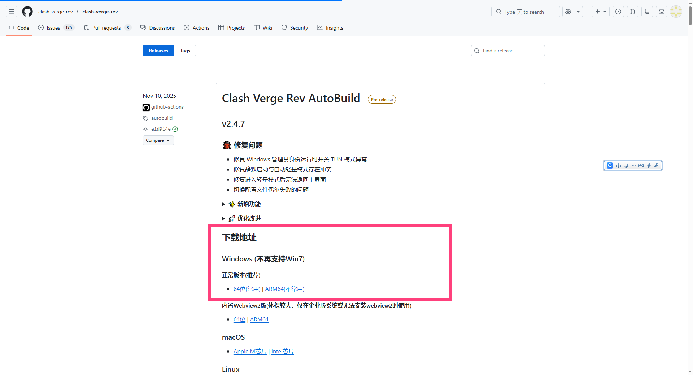
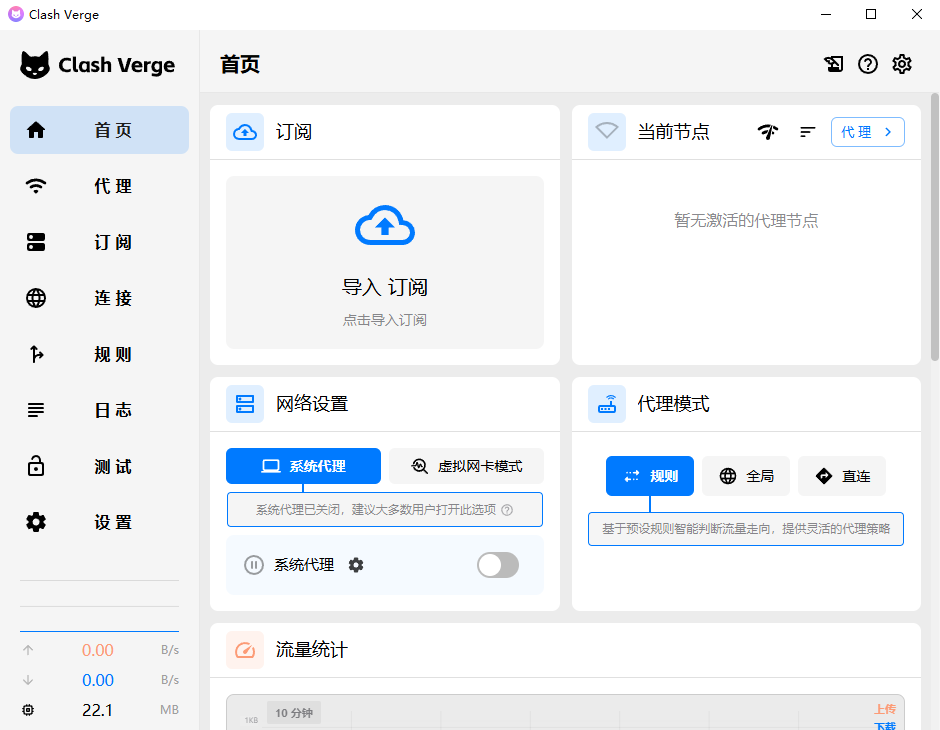
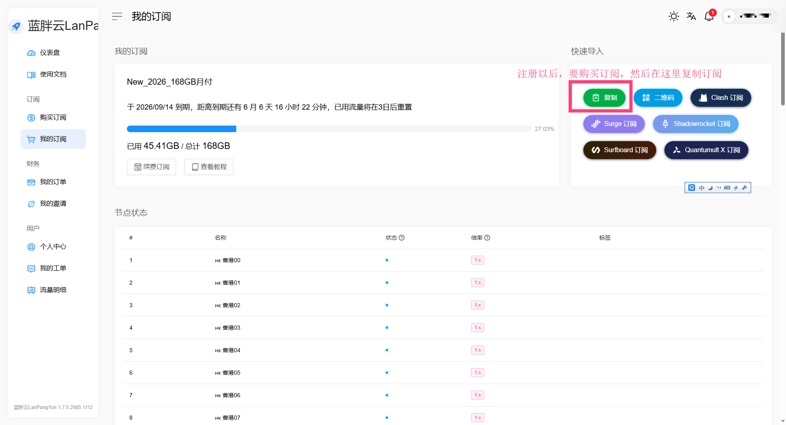
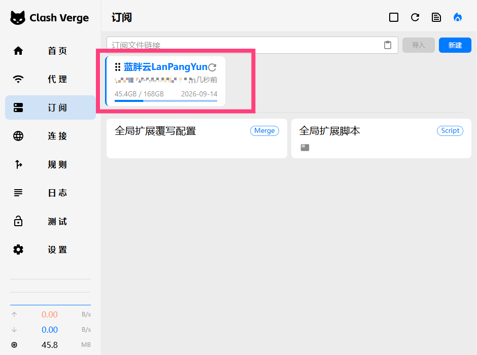
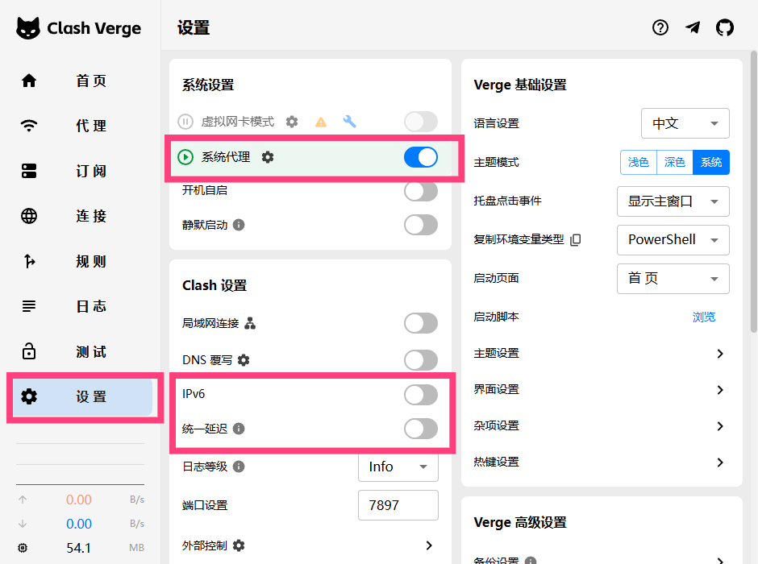
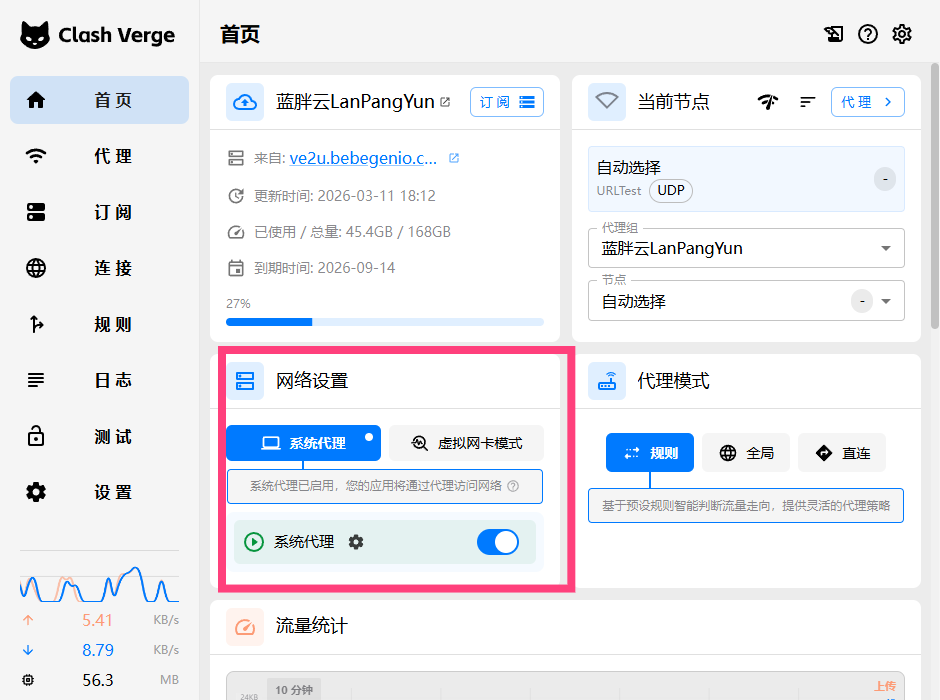
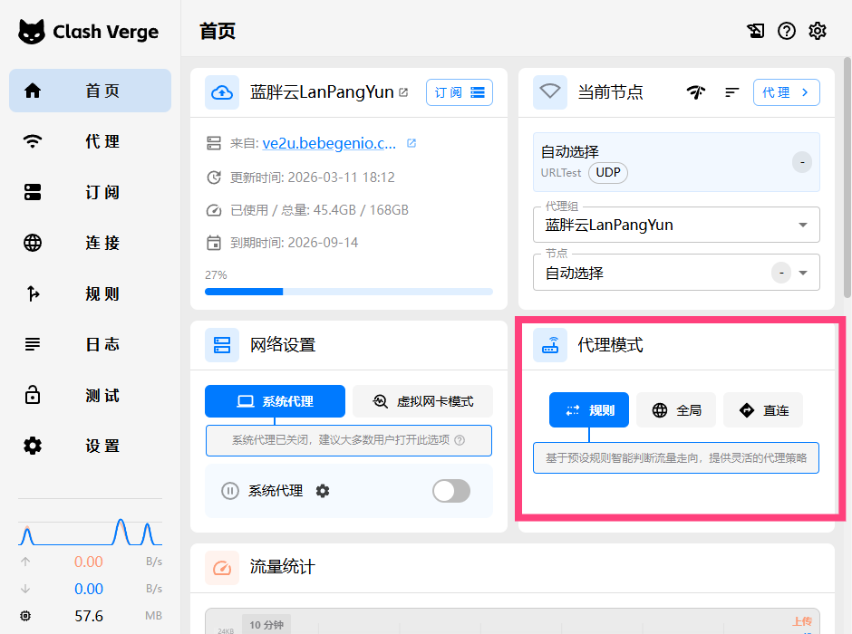
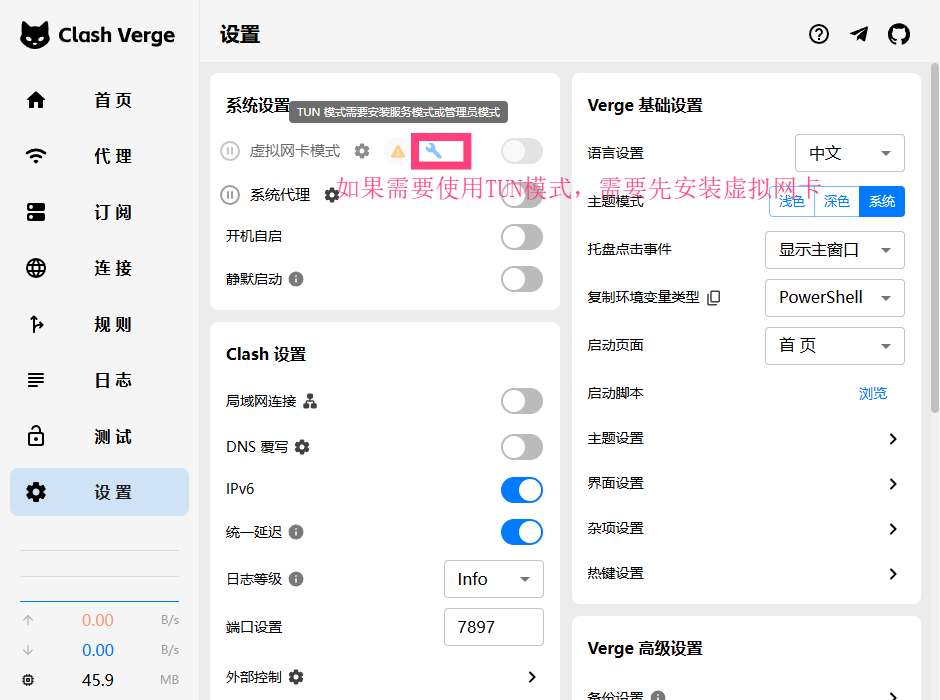
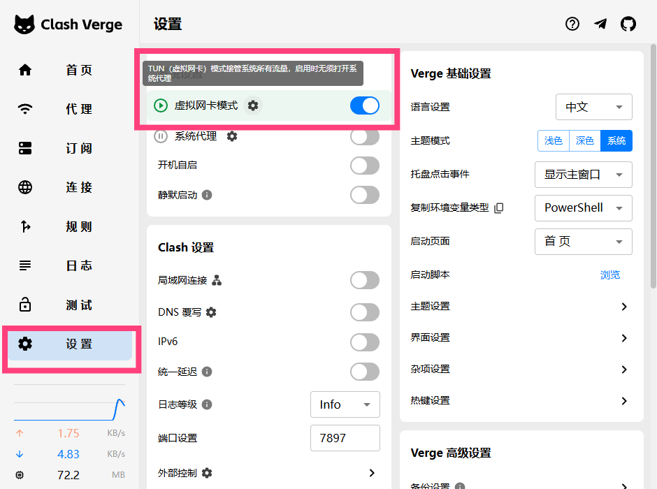
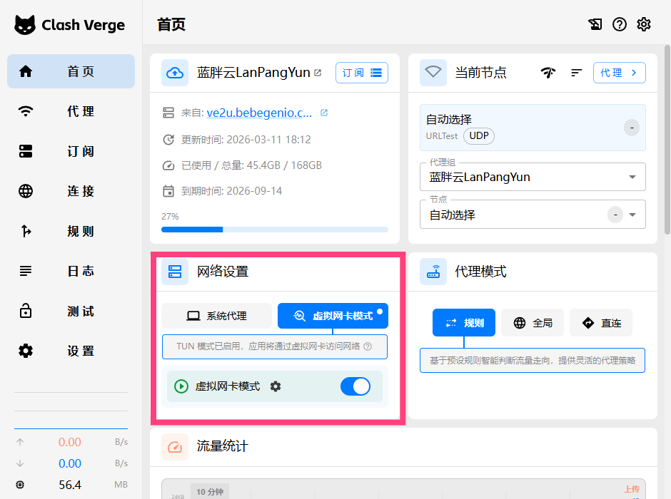

Windows Clash 翻墙教程 — Clash Verge Rev
在 Windows 上使用 Clash Verge Rev 实现科学上网
快速导航
软件介绍
Clash Verge Rev 是一款基于 Clash 内核的跨平台代理客户端，专为 Windows、macOS 和 Linux 设计。它提供图形化界面，支持订阅管理、规则分流、TUN 模式等高级功能，是当前 Windows 上最活跃维护的 Clash 客户端之一。
为什么选择 Clash Verge Rev？
- 开源免费：基于 MIT 协议，代码透明可审计
- 功能完善：支持订阅、规则、TUN、脚本模式等
- 持续维护：社区活跃，定期更新修复问题
- 跨平台：同一套配置可在多系统使用
Clash for Windows (CFW) 曾是 Windows 上最流行的 Clash 图形客户端，但项目已于 2023 年 11 月停止维护。Clash Verge Rev 是 CFW 的继任者之一，采用 Rust 重写，性能更好、资源占用更低，建议新用户直接使用 Clash Verge Rev。
系统要求
| 项目 | 要求 |
|---|---|
| 操作系统 | Windows 10 64 位 或 Windows 11 64 位 |
| 架构 | x64 (amd64)，不支持 32 位系统 |
| 磁盘空间 | 约 100MB |
| .NET 运行时 | 部分版本可能需要 .NET 6.0 或更高 |
检查系统版本：
# 在 PowerShell 中执行
[System.Environment]::OSVersion.Version
# 或
winver若需安装 .NET 运行时，可从 Microsoft .NET 下载页 获取。
下载安装
1. 访问 GitHub 发布页
打开 Clash Verge Rev 的官方发布页面：
https://github.com/clash-verge-rev/clash-verge-rev/releases

2. 选择安装包
在 Assets 区域找到适合 Windows x64 的安装包：
clash-verge-rev_x.x.x_x64-setup.exe— 推荐，带安装向导clash-verge-rev_x.x.x_x64-portable.zip— 便携版，解压即用
3. 安装步骤
- 双击下载的
.exe安装包 - 若出现 Windows 安全提示，点击「更多信息」→「仍要运行」
- 选择安装路径（默认即可）并点击「安装」
- 安装完成后，勾选「启动 Clash Verge Rev」并点击「完成」
启动后应看到 Clash Verge Rev 主界面，包含 Profiles、Proxies、Logs 等标签页。

导入订阅
1. 获取订阅链接
从您的机场/代理服务商获取订阅链接（通常为 https://xxx.com/api/v1/client/subscribe?token=xxx 格式）。请妥善保管，不要泄露。
购买 & 获取 Clash 订阅推荐
如果您尚未拥有可用的 Clash 订阅节点，可参考以下页面查看节点推荐与购买流程：
推荐体验节点注册地址：
https://jpp.lanpangyun.me/#/register?code=30Y2Sexl

2. 导入订阅
- 打开 Clash Verge Rev
- 点击左侧 Profiles（配置）标签
- 在顶部输入框粘贴订阅链接
- 点击 Import（导入）按钮
3. 选择配置
导入成功后，配置列表会出现新条目。点击该配置名称，使其变为当前使用的配置（高亮显示）。

4. 更新订阅
- 点击配置右侧的刷新图标可手动更新
- 建议在 Settings → Profiles 中开启 Auto Update，设置自动更新间隔（如 24 小时）
启动代理
系统代理模式（System Proxy）
- 在主界面找到 System Proxy 开关
- 打开开关，系统代理将指向 Clash（默认
127.0.0.1:7897） - 支持系统代理的软件（如浏览器、部分应用）会自动走代理

首页的开关位置

TUN 模式 vs 系统代理模式
| 特性 | 系统代理 | TUN 模式 |
|---|---|---|
| 覆盖范围 | 仅支持系统代理的应用 | 几乎所有应用（全局） |
| 需要管理员 | 否 | 是（安装 TUN 驱动） |
| UWP 应用 | 需额外配置 Loopback | 直接支持 |
| 游戏/客户端 | 可能不走代理 | 通常可走代理 |
| DNS 处理 | 依赖应用自身 | 可统一接管 |
日常浏览推荐先用系统代理，若部分软件不走代理，再考虑开启 TUN 模式。
代理模式说明
在 Proxies 标签页可切换全局代理模式：
| 模式 | 说明 |
|---|---|
| Rule（规则） | 按规则分流：国内直连，国外走代理。推荐日常使用 |
| Global（全局） | 所有流量走代理 |
| Direct（直连） | 所有流量直连，不走代理 |
| Script（脚本） | 使用 JavaScript 脚本自定义分流逻辑 |

TUN 模式详解
什么是 TUN 模式？
TUN 模式通过虚拟网卡接管系统网络流量，实现真正的全局代理，无需应用支持系统代理。
启用 TUN 模式
- 点击主界面的 TUN 开关
- 首次使用会提示安装 wintun 驱动，需管理员权限
- 按提示完成驱动安装后，TUN 模式即可生效
首次启用 TUN 模式时，会提示安装虚拟网卡，需要管理员权限，安装前如遇杀毒软件报错可暂时退出杀毒软件。

成功安装后，TUN 功能相关开关会正常亮起。

首页也有 TUN 模式快捷开关。如遇无法安装或功能不可用，可尝试以管理员身份重启 Clash Verge Rev，或重启电脑后重试。

TUN 模式优势
- 全局生效：游戏、UWP 应用、命令行工具等均可走代理
- DNS 可控：可统一处理 DNS，减少泄露风险
- 透明代理：应用无感知，无需单独配置
注意事项
- 安装驱动时请确保网络畅通，避免下载失败
- 若驱动安装失败，可尝试以管理员身份运行 Clash Verge Rev
- 部分企业/学校网络可能限制 TUN 驱动安装
分应用代理
UWP 应用（Microsoft Store）不走代理？
UWP 应用默认有网络隔离，即使开启系统代理，也可能无法使用。需要配置 Loopback 豁免。
以管理员身份打开 PowerShell 或 CMD，执行：
# 查看已安装的 UWP 应用
Get-AppxPackage | Select Name, PackageFamilyName
# 为指定应用添加 Loopback 豁免（示例：Microsoft Edge）
CheckNetIsolation.exe LoopbackExempt -a -n="Microsoft.MicrosoftEdge_8wekyb3d8bbwe"
# 为所有 UWP 应用添加豁免（不推荐，仅作参考）
Get-AppxPackage | ForEach-Object { CheckNetIsolation.exe LoopbackExempt -a -n=$_.PackageFamilyName }
# 查找 Telegram 的 PackageFamilyName
Get-AppxPackage *Telegram* | Select Name, PackageFamilyName将输出的 PackageFamilyName 填入上述命令的 -n= 参数。也可使用 EnableLoopback 等图形化工具。
规则与分流
Clash 按从上到下的顺序匹配规则，命中即执行对应动作。订阅配置通常包含类似结构：
rules:
- DOMAIN-SUFFIX,google.com,PROXY
- DOMAIN-SUFFIX,youtube.com,PROXY
- GEOIP,CN,DIRECT
- MATCH,PROXY在 Profiles 中编辑配置，或使用 Settings → Config 中的 Prepend Rules / Append Rules 追加规则：
# 示例：屏蔽某域名
- DOMAIN,ads.example.com,REJECT
# 示例：某域名强制直连
- DOMAIN-SUFFIX,internal.company.com,DIRECT引用规则集（Rule Providers）
rule-providers:
reject:
type: http
url: "https://cdn.jsdelivr.net/gh/Loyalsoldier/clash-rules@release/reject.txt"
path: ./ruleset/reject.yaml
interval: 86400
rules:
- RULE-SET,reject,REJECT
# ... 其他规则开机自启
方法一：软件内设置
- 打开 Settings（设置）
- 找到 General 或 Startup 相关选项
- 开启 Launch on system startup（开机启动）
截图待补充：开机自启设置界面。
方法二：任务计划程序
- 按
Win + R，输入taskschd.msc，回车 - 右侧点击「创建基本任务」
- 名称填「Clash Verge Rev」，触发器选「当计算机启动时」
- 操作选「启动程序」，程序填 Clash Verge Rev 安装路径
- 完成创建后，在属性中勾选「使用最高权限运行」（若需 TUN）
C:\Users\你的用户名\AppData\Local\Programs\clash-verge-rev\Clash Verge Rev.exe常见问题
1. 端口冲突 — 在 Settings → Clash 中修改端口，或关闭占用端口的其他代理软件。
netstat -ano | findstr 78972. TUN 驱动安装失败 — 以管理员身份运行；暂时关闭杀毒软件；或手动下载 wintun 并安装。
3. 订阅更新失败 — 检查订阅链接是否有效；检查网络；部分机场需在网页端重新生成订阅链接。
4. DNS 泄露 — 开启 TUN 模式；在配置中启用 dns.enable 和合适的 fake-ip/redir-host 模式；使用 DoH/DoT DNS。
5. 部分网站无法访问 — 确认代理模式为 Rule；检查规则是否将国内域名错误指向代理；更新订阅或规则集。
进阶配置
自定义配置覆写 — 在 Settings → Config 中可添加 Prepend 或 Append 配置，对当前配置进行覆写。
External Controller API — Clash 提供 REST API，默认地址为 127.0.0.1:9090，可用于第三方面板控制或脚本自动化。
# 示例：获取当前配置（PowerShell）
Invoke-WebRequest -Uri "http://127.0.0.1:9090/configs" -UseBasicParsingClash Dashboard — 在 Settings 中可配置 Dashboard 地址，使用 Yacd（https://yacd.haishan.me）等 Web 面板进行可视化管理。